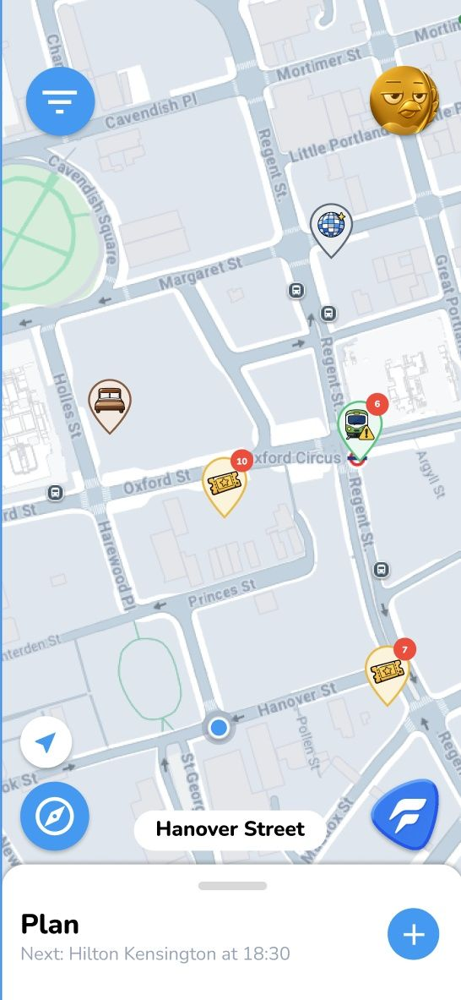
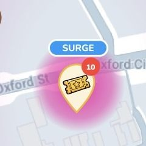
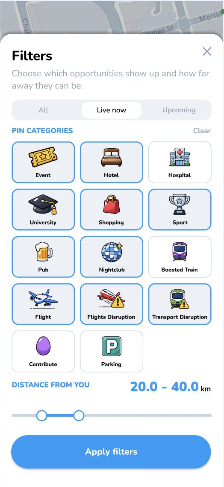
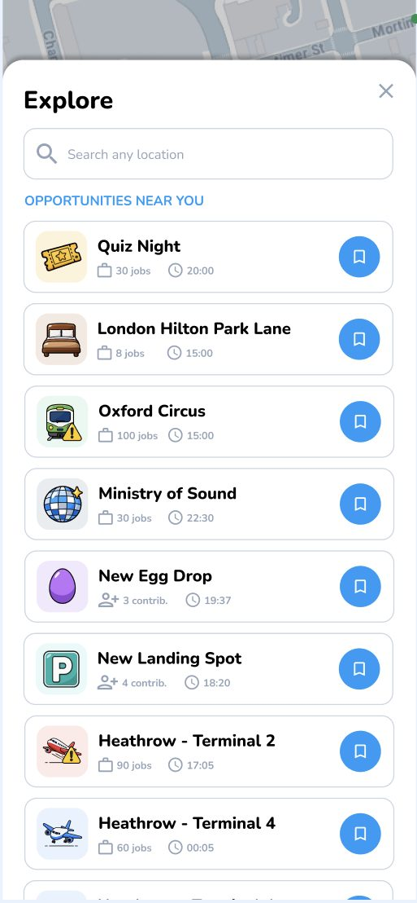
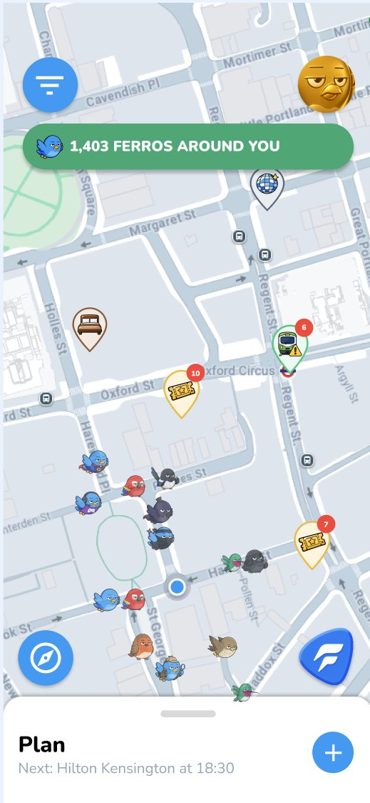
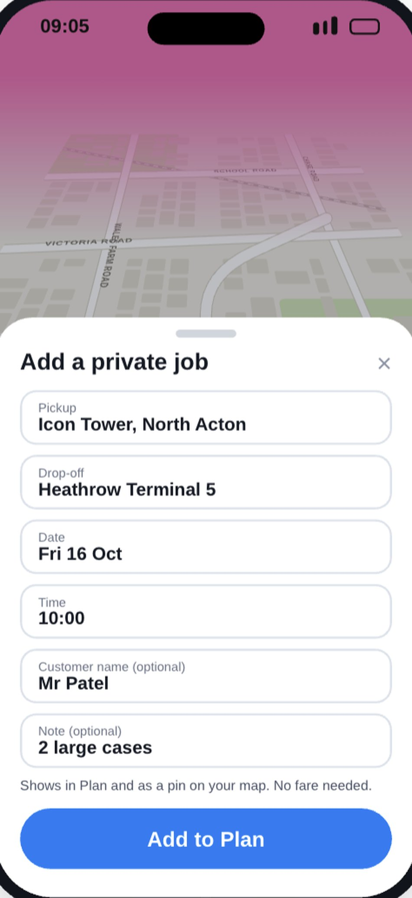

We find the SURGEs for you.
Works alongside Uber, Bolt & more · Not connected to your accounts

Open Ferro.
It tells you
where to go.
Your best live opportunity, ready when you open the app. No searching.

Get to the SURGEs first.
We predict surges before they happen. Be there when they hit. No more chasing surges you miss.
See surges days ahead. Plan your day.
On the day, we warn you before it goes live:
- 4 hrs
- 90 mins
- 20 mins


Find the fare.
Avoid fines.
Ferro shows where you can and can't wait near an opportunity, and warns you before you get a ticket.
- ✓Know where you can waitWaiting rules near every opportunity.
- !Stopped somewhere restricted?Ferro warns you after 2–3 minutes, like on a red route.
- CCongestion Charge alertsKnow when you enter the zone.
Earn more from SURGEs. Lose less to fines.
Uses D-TRO road-restriction data. Ferro gives guidance, not legal advice. Stopping is not the same as waiting.

Pick what you prefer.
Filter it. Save it. Go.




See Ferros
around you.
See other drivers nearby.
- No one is tracked
- Just a footprint on the map
- Go invisible anytime
Everyone leaves a footprint, not a trail.

Plan your day.
All your jobs in one place.

- Ferro opportunity
- Pre-booked job
- Private job

Real world example
of Ferro working.
Attendance 39,402
“Bro, I was around it yeah, but it was surged all over with the rain also… I think I made like £90 in an hour.”
Ferro driverFerro predicted the surge and sent a driver. Our AI finds the fastest way in, so you beat the traffic.
Try it nowClub and league names and crests belong to their owners. Ferro Maps is not affiliated with or endorsed by them.
Open.
Go.
Earn.
Ferro Gold
Jobs sent to you.
Ferro Stardust
Illuminus. Ferro, covered in stars.
- For Comfort, Luxury and Exec drivers.
- High-paying private pre-booked jobs.
We plan to partner with Premier League clubs.
We are not yet partnered with the Premier League or any club.
Earn more.
Start today.
Use it next to Uber, Bolt and any ride-hailing app. No log-ins. No risk.